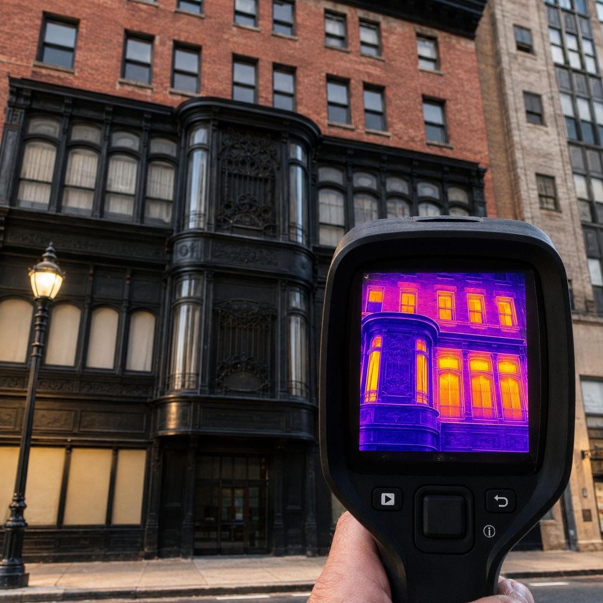
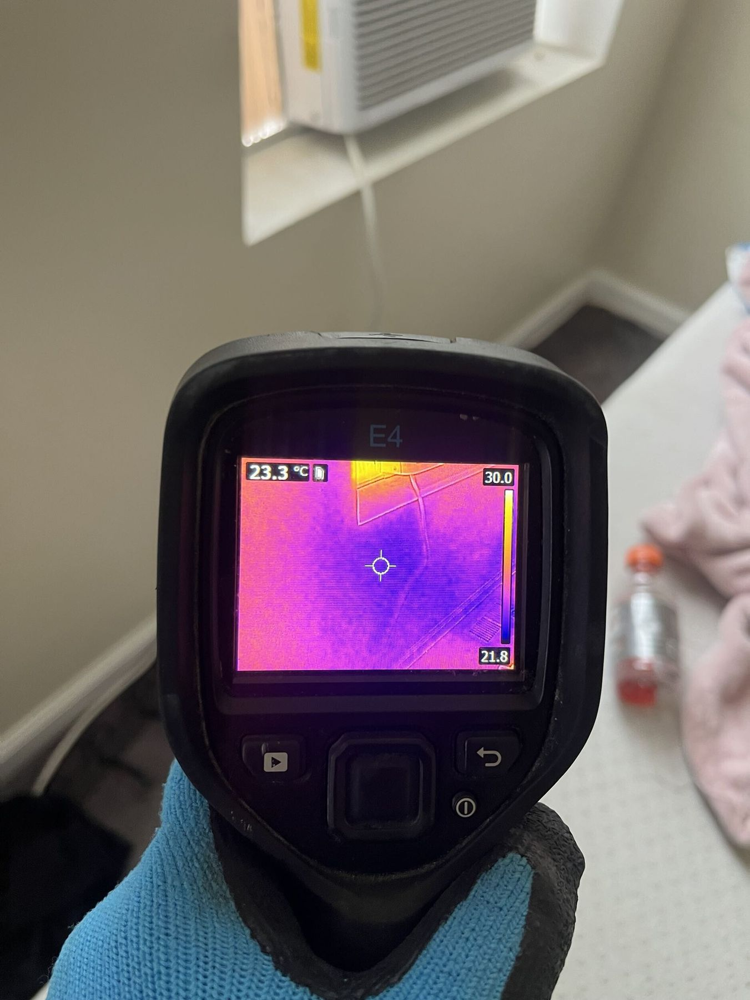
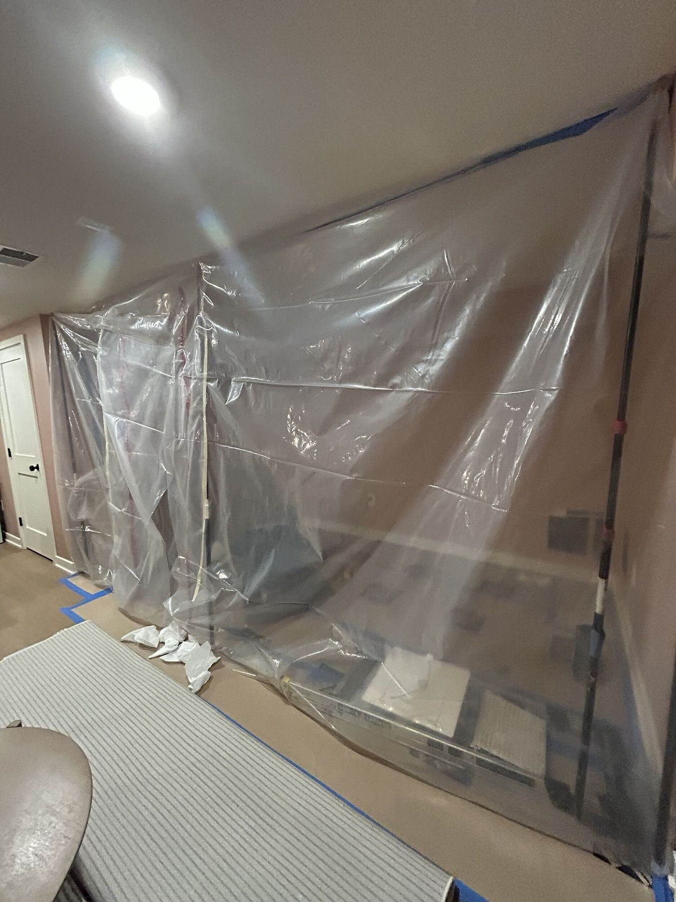
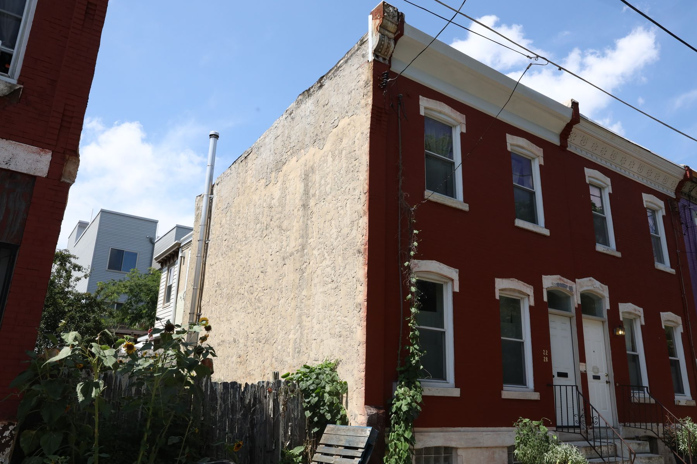

Say what it is, not what sells
A low-risk report is the most common outcome and we don't dress it up as a reason to book something. Green means safe, and it never means anything else.
Home › About
Built by inspectors
AccuMold comes from Moisture Master Pros — a working inspection and remediation company. The app exists because the same three questions kept arriving by phone, and answering them properly used to cost the caller several hundred dollars.
In the field
Why we built it
They need someone to look at a photograph and say “that's condensation, wipe it down and open a window,” or “that's not condensation, get someone out.” Thirty seconds of judgement.
The problem is that thirty seconds of judgement has historically been bundled with a call-out fee, a diary slot four days away, and a form. So people don't ask — they wait, and the small job becomes the big one.
AccuMold takes the part that should be free and makes it free. The scan, the risk level, the written explanation, the record you can keep. If it turns out you do need a professional, the app is also the shortest route to one.
How we build it
A low-risk report is the most common outcome and we don't dress it up as a reason to book something. Green means safe, and it never means anything else.
Scanning, reporting, whole-house inspections and the assistant cost nothing, with no scan limit. The consultations are what pay for it, and they're optional.
An app report is a risk assessment. Species identification and spore counts need physical sampling. We say so on every report rather than letting people assume otherwise.
Accreditations
Moisture Master Pros is a BBB Accredited Business and a member of the Indoor Air Quality Association. The standards those bodies set are the standards the app's language and thresholds are written against.






One more thing
Moisture Master Pros is the inspection and remediation company. AccuMold is the app it built. They share expertise, photography and standards — they are not the same business, and we don't claim one's history as the other's.
Stop guessing
A free app that turns a phone photo into an instant mold risk report.
Free to download · Free to scan · Free to report